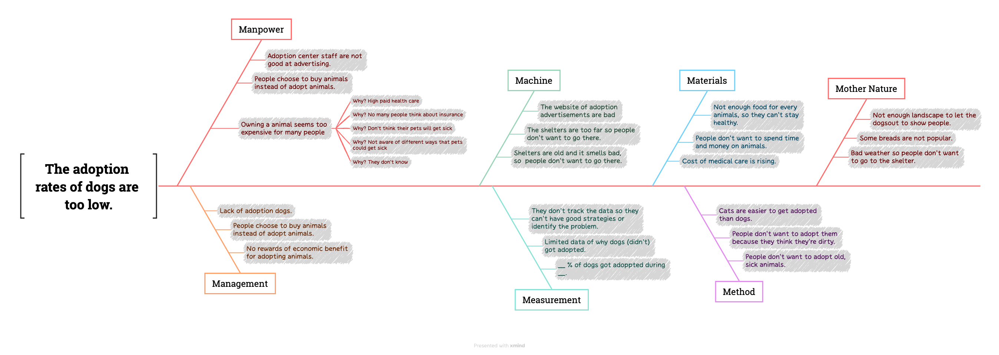

About Our Research
Project Framework & Core Objectives
Welcome to our research project! We want to find out why dog adoption rates at animal shelters remain so low, even though many people care about stray animals. Our goal is to understand the main reasons that stop people from adopting, and find practical ways to help more shelter dogs find loving homes.
To start our study, our team created a Cause-and-Effect Diagram (Fishbone Model). This helped us group the problems we found into clear, real-world challenges—such as high costs, buying habits, and poor shelter environments—before we started collecting survey data.
Structural Problem Decomposition (Cause-and-Effect Analysis)
The fishbone architecture below maps out the core root causes contributing to the macro-level problem statement: "The adoption rates of dogs are too low." By examining the operational bottlenecks, we segregated the underlying symptoms into distinct, interdependent institutional and physiological dimensions.

(Click to expand)
Descriptive Summary: Understanding Low Dog Adoption Rates & Remedies
To complement our quantitative findings, the video presentation below offers a comprehensive analysis of the psychological, logistical, and financial bottlenecks that depress shelter adoption rates, along with key strategic remedies.
Video Presentation: Systemic Adoption Barriers
Research Summary & Video Brief
- Owning an animal seems too expensive for many people
- People choose to buy animals instead of adopt animals
- Shelters are old and it smells bad, so people don't want to go there.
We decided to focus on Owning an animal seems too expensive for many people. Fear of unaffordable veterinary care and ongoing expenses is the most significant hurdle.
- Why don't people adopt? Medical costs are perceived as too expensive.
- Why? Lack of widespread and accessible pet insurance coverage.
- Why? Insurers anticipate limited profit margins and high risk exposure.
- Why? The general public is unfamiliar with disease profiles and preventive care.
- Why? Insufficient public education on animal health, leading to financial hesitation.
TALKING TO DA'AN STUDENTS
Try to run the survey to collect direct feedback regarding public awareness of shelter animals. This fieldwork helps us analyze the cognitive barriers students face when considering adoption.
Student Survey Fieldwork - Session 1
Student Survey Fieldwork - Session 2
Questionnaire Evolution (Version 1 & Version 2)
To ensure the precision and academic validity of our research metrics, our survey design underwent iterative developmental phases. Below, we present the original draft (Version 1) alongside the refined questionnaire (Version 2), documenting our modifications and structural optimizations. Please note that the final version of the questionnaire is available on the Methods page.
With this survey, we are trying to research society’s attitudes towards the financial barriers of pet ownership and assess if knowledge about potential pet illness will change people's attitudes and awareness about pet insurance, bring a rise in usage and lower people’s beliefs about the high cost of owning a pet.
I want to learn from my survey questions:- “How people think about dog costs, and if people don’t want to own dogs because of cost”
- “How much knowledge of pet illness does people know”
- “ Can people even guess the cost of getting health care for animals”
- “How much people think about the cost of an animal”
- “How much financial assistance might people need”
- “How people know about pet insurance”
Do you currently own any dog?
What do you expect the average annual medical expenses are for having a dog?
What do you feel is the main reason preventing people from adopting a dog? (Select all that apply)
With this survey, we are trying to research society’s attitudes towards the financial barriers of pet ownership and assess if knowledge about potential pet illness will change people's attitudes and awareness about pet insurance, bring a rise in usage and lower people’s beliefs about the high cost of owning a pet.
I want to learn from my survey questions:- “How people think about dog costs, and if people don’t want to own dogs because of cost”
- “How much knowledge of pet illness does people know”
- “ Can people even guess the cost of getting health care for animals”
- “How much people think about the cost of an animal”
- “How much financial assistance might people need”
- “How people know about pet insurance”
Do you have or have you ever had a dog? (Single choice)
If the dog is getting sick, how likely would you be to take your dog to see the vet? (Single choice)
What do you think the average annual medical expenses are for having a dog? (Single choice)
What do you feel is the main reason preventing people from adopting a dog? (Single choice)
If the cost of health care decreases, how likely are you willing to adopt a stray dog within 3 years? (Single choice)